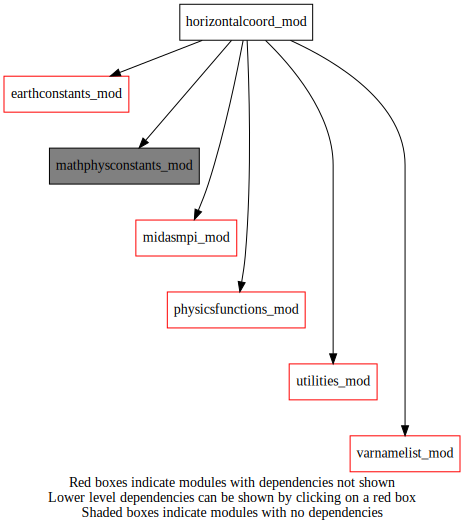

Dependency Diagrams:
 Direct Dependency Diagram¶
Reverse Dependency Diagram¶
Description
MODULE HorizontalCoord_mod (prefix=’hco’ category=’7. Low-level data objects’)
- Purpose
Derived type and procedures related to the horizontal grid coordinate for various grids (global and limited area).
Quick access
- Variables
- Routines
global_or_lam(),grid_mask(),hco_deallocate(),hco_equal(),hco_mpibcast(),hco_setupfromfile(),hco_setupygrid(),hco_weight(),inter_curve_boundary_yy(),yyg_weight()Needed modules
midasmpi_mod: MODULE midasMpi_mod (prefix=’mmpi’ category=’8. Low-level utilities and constants’)
earthconstants_mod: MODULE earthConstants_mod (prefix=’ec’ category=’8. Low-level utilities and constants’) Prefixes: ec_ (Earth constants), for miscellaneous values from diverse sources
mathphysconstants_mod: MODULE MathPhysConstants_mod (prefix=’mpc’ category=’8. Low-level utilities and constants’)
utilities_mod: MODULE utilities_mod (prefix=’utl’ category=’8. Low-level utilities and constants’)
varnamelist_mod: MODULE varNameList (prefix=’vnl’ category=’7. Low-level data objects’)
physicsfunctions_mod: MODULE physicsFunctions_mod (prefix=’phf’ category=’8. Low-level utilities and constants’)Types
- type horizontalcoord_mod/unknown_type¶
- Type fields
% dlat [real ]
% dlon [real ]
% ezscintid [integer ]
% ezscintidsubgrids (maxnumsubgrid) [integer ]
% global [logical ]
% gridname [character ]
% grtyp [character ]
% grtyptictac [character ]
% ig1 [integer ]
% ig2 [integer ]
% ig3 [integer ]
% ig4 [integer ]
% initialized [logical ]
% lat (*) [real ,allocatable]
% lat2d_4 (*,*) [real ,allocatable]
% lon (*) [real ,allocatable]
% lon2d_4 (*,*) [real ,allocatable]
% maxgridspacing [real ]
% mingridspacing [real ]
% ni [integer ]
% nj [integer ]
% numsubgrid [integer ]
% rotated [logical ]
% tictacu (*) [real ,allocatable]
% xlat1 [real ]
% xlat1_yan [real ]
% xlat2 [real ]
% xlat2_yan [real ]
% xlon1 [real ]
% xlon1_yan [real ]
% xlon2 [real ]
% xlon2_yan [real ]
Variables
- horizontalcoord_mod/struct_hco [public]¶
Subroutines and functions
- subroutine horizontalcoord_mod/hco_setupfromfile(hco, templatefile, etiketname[, gridname_opt[, varname_opt]])¶
- Purpose
to initialize hco structure from a template file
- Arguments
hco [struct_hco ,pointer]
templatefile [character ,in]
etiketname [character ,in]
- Options
gridname_opt [character ,in,]
varname_opt [character ,in,]
- Called from
bcs_getradiosondeweight(),csl_setup(),ens_readensemble(),epp_addrandompert(),gio_readfromfile(),gio_readfile(),inn_gethcovcofromtrlmfile(),lbhi_gethorizgridinfo(),oer_seterrbackscatanisice(),omf_ominusf(),omf_ominusfens(),thn_radiosonde(),midas_sstbias,midas_ssttrial,midas_adjointtest,midas_analysiserroroi,midas_calcstats,midas_diagbmatrix,midas_diaghbht,midas_enspostprocess,midas_ensembleh,midas_extractbmatrixfor1dvar,midas_gencoeff,midas_letkf,midas_obsimpact,midas_obsselection,midas_pseudosstobs,midas_randompert,midas_var,midas_var1d- Call to
utl_abort(),utl_varnamepresentinfile(),utl_fstlir(),global_or_lam()
- subroutine horizontalcoord_mod/global_or_lam(global, lon, ni)¶
- Purpose
to decide if a given grid is global or lam from input longitude array
- Arguments
global [logical ,out]
lon (ni) [real ,in]
ni [integer ,in,]
- Called from
- subroutine horizontalcoord_mod/hco_mpibcast(hco)¶
- Purpose
to broadcast hco strucure from MPI task 0 to other tasks
- Arguments
hco [struct_hco ,pointer]
- Called from
- Call to
- function horizontalcoord_mod/hco_equal(hco1, hco2)¶
- Purpose
to check if two given hco strucures are equal or not
- Arguments
hco1 [struct_hco ,pointer]
hco2 [struct_hco ,pointer]
- Return
equal [logical ]
- Called from
ens_readensemble(),gvt_transform_gsv(),gio_readfromfile(),gsv_copy(),gsv_copyheightsfc(),int_hinterp_gsv(),vinterp_gsv_r8(),vinterp_gsv_r4(),int_tinterp_gsv(),lbhi_gethorizgridinfo(),s2c_tl(),s2c_ad(),s2c_nl()
- subroutine horizontalcoord_mod/hco_deallocate(hco)¶
- Arguments
hco [struct_hco ,pointer]
- Called from
- subroutine horizontalcoord_mod/grid_mask(f_mask_8, dx, dy, xg, yg, ni, nj)¶
- Purpose
- Find out where YIN lat lon points are in (YAN) grid with call to smat.
If they are not outside of Yin grid, put area to zero for those points.
Author Qaddouri
- Arguments
f_mask_8 (ni,nj) [real ,out]
dx [real ]
dy [real ]
xg (ni) [real ]
yg (nj) [real ]
ni [integer ,in,]
nj [integer ,in,]
- Called from
- Call to
- subroutine horizontalcoord_mod/inter_curve_boundary_yy(x, y, xi, yi, np)¶
- Purpose
- compute the intersections between a line and the panel
(yin or yang) boundary. The line passes through the panel center point (0, 0) and the cell center point (x, y).
Author A. Qaddouri. October 2016
- Note: this routine has been taken and adjusted from a routine
with the same name in the GEM model.
- Arguments
input: (x, y): longitude, latitude of the cell center point,
- Arguments
np [integer ] ::
workspace, output: (xi, yi): longitude, latitude of the
intersection point.
x [real ]
y [real ]
xi [real ]
yi [real ]
- Called from
- subroutine horizontalcoord_mod/hco_weight(hco, weight)¶
- Purpose
- given the horizontal grid definition of the grid,
return appropriate weights for individual points (avoiding double counting in the overlap regions in the case of a Yin-Yang grid).
- author: Abdessamad Qaddouri and Peter Houtekamer
October 2016
- Revision: imported code for the Yin-Yang grid on May 2021 from the EnKF library and
combined with code for other grid types from the MIDAS library.
- Arguments
input:
- Arguments
hco [struct_hco ,in] :: structure with the specification of the horizontal grid output:
weight (*,*) [real ,out] :: weight to be given when computing a horizontal average
- Called from
- Call to
- function horizontalcoord_mod/yyg_weight(x, y, dx, dy, np)¶
- Arguments
x [real ]
y [real ]
dx [real ]
dy [real ]
np [integer ]
- Return
yyg_weight [real ]
- Called from
- Call to
- subroutine horizontalcoord_mod/hco_setupygrid(hco, ni, nj)¶
- Purpose
to initialize hco structure for a Y grid
- Arguments
hco [struct_hco ,pointer]
ni [integer ,in]
nj [integer ,in]
- Called from
{kind=link}
{kind=link}